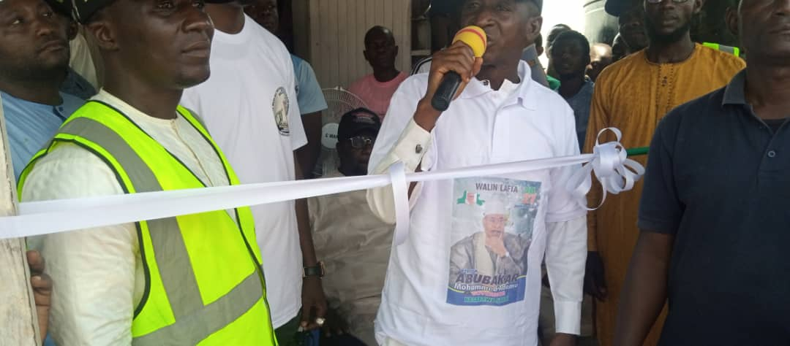
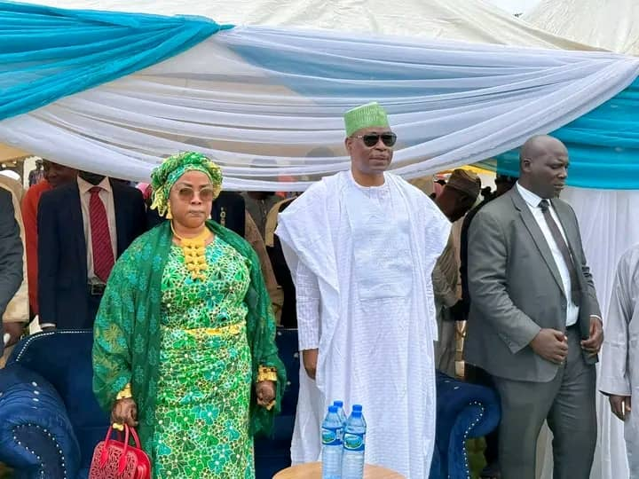
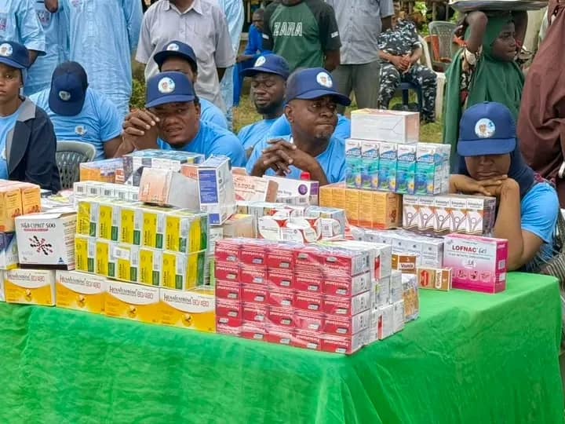
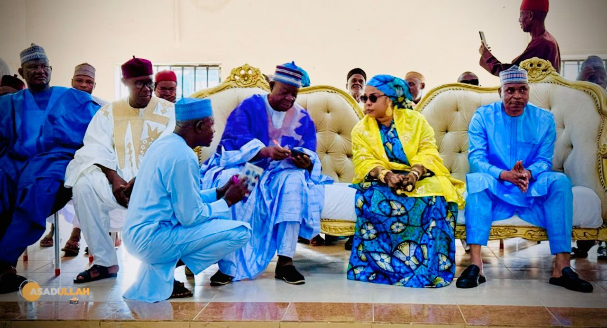
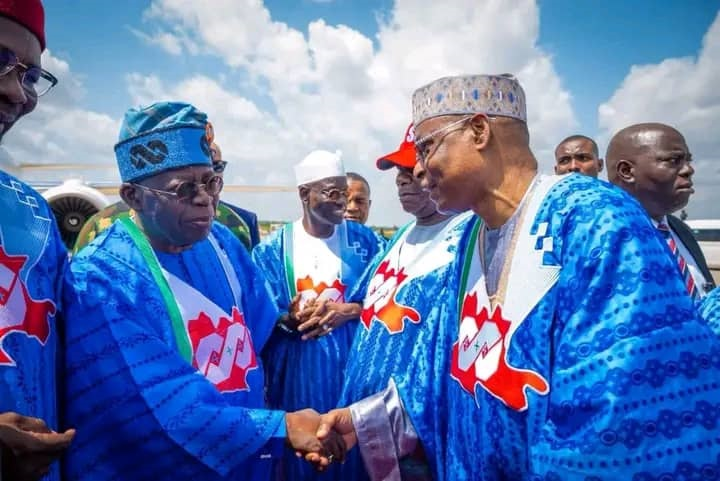
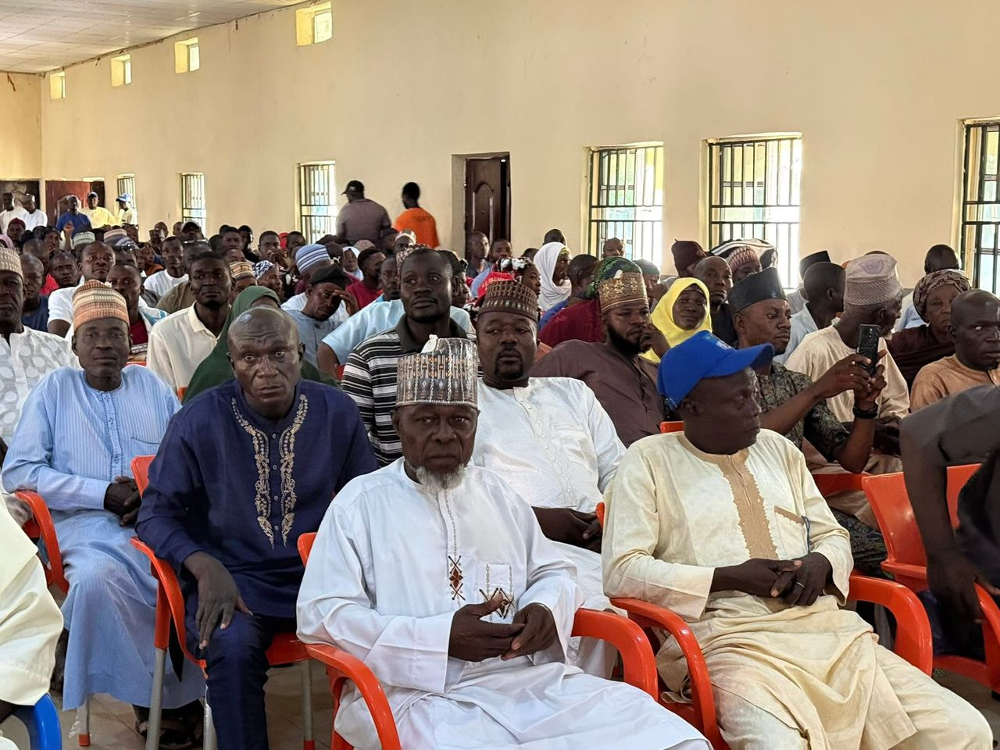
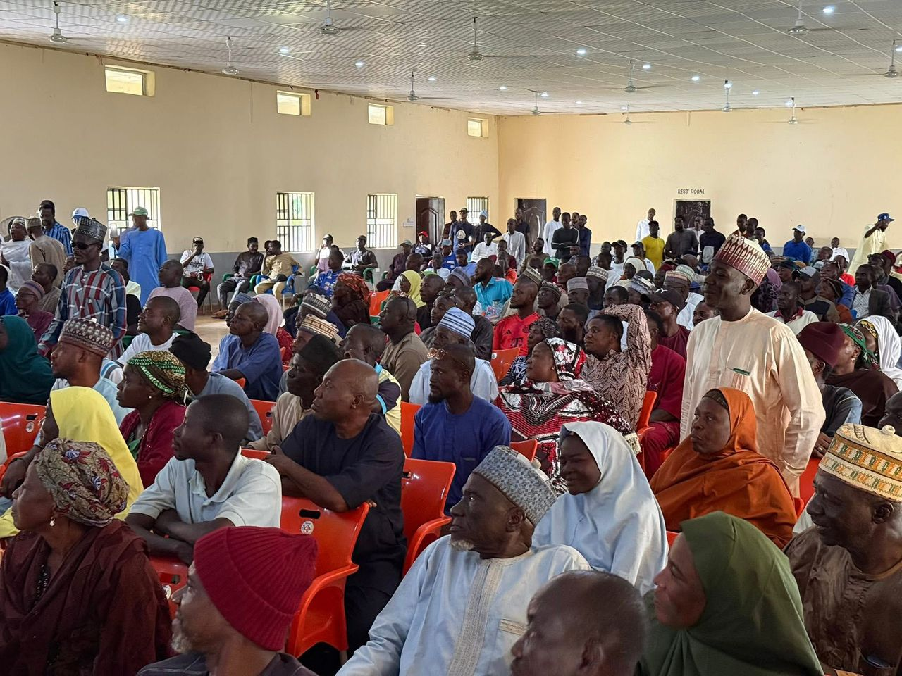
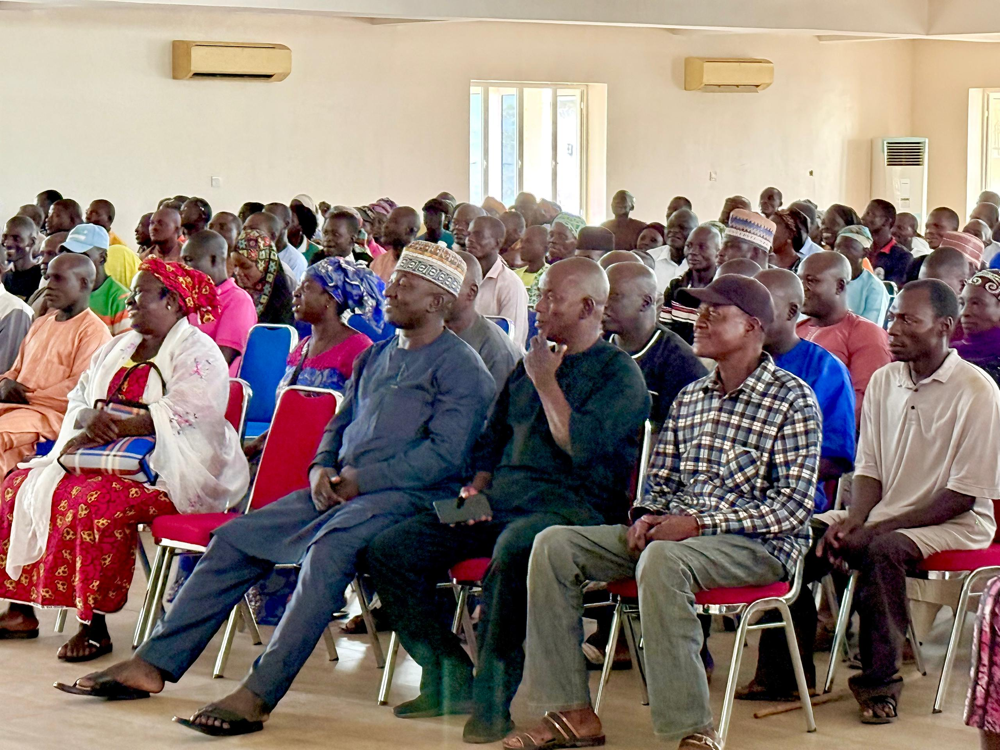
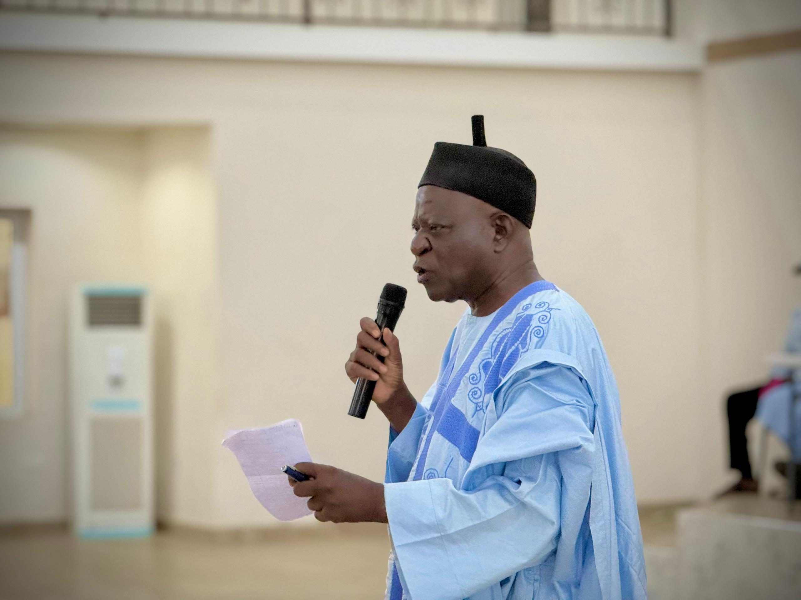

Muhammad Abubakar Adamu CFR, NPM, mni, accompanied by his wife Hajiya Rukaiya Adamu, Dan Galadima, Barrister Musa Hussaini, Alh Abubakar Sandaji (Turakin Lafia), Alhaji Tanimu Tancy, and prominent figures., flagged off a free medical outreach and drug distribution in Akwanga, targeting vulnerable groups like women, children, and the elderly.
Muhammad Abubakar Adamu CFR, NPM, mni's free medical outreach and drug distribution initiative in Akwanga showcases his dedication to giving back to the community.
By providing essential healthcare services, Adamu is making a positive impact on the community, bringing smiles and health to the people of Akwanga and beyond. This selfless act demonstrates his leadership qualities and vision for a healthier, more prosperous society.
October
2nd 2025
By, A4G MEDIA TEAM

The commissioning of R T D I G P MUHAMMAD ABUBAKAR ADAMU offices 1 and 2 at UNGWAN JABA LAFIA . By G7 networks.
Under the leadership of Alh Idris (Adon Garin Akurba)

Muhammad Abubakar Adamu CFR Flags Off Free Medical Outreach in Akwanga
Akwanga, Nasarawa State – October 2, 2025:
In a remarkable show of compassion and community service, former Inspector General of Police, Muhammad Abubakar Adamu CFR, NPM, mni, alongside his wife, Hajiya Rukaiya Adamu, flagged off a free medical outreach and drug distribution program in Akwanga, Nasarawa State.
The initiative, aimed at supporting vulnerable groups including women, children, and the elderly, drew widespread appreciation from the local community and stakeholders. Distinguished personalities such as Dan Galadima, Barrister Musa Hussaini, Alhaji Abubakar Sandaji (Turakin Lafia), and Alhaji Tanimu Tancy, among other prominent figures, were in attendance to show their support.
This outreach is part of Adamu’s ongoing commitment to giving back to society and improving the lives of the underserved. By providing essential healthcare services and free medications, the initiative brings much-needed relief to those who often struggle to access quality healthcare.
Speaking at the event, Adamu emphasized the importance of community health as a foundation for development.

Residents of Akwanga expressed gratitude for the gesture, describing it as timely and impactful.
This selfless initiative highlights Muhammad Abubakar Adamu’s leadership, empathy, and vision for a healthier and more prosperous society. His actions continue to inspire positive change and reaffirm his role as a community leader beyond public office.

With Hon. Danladi Halilu Envuluanza

IGP Welcome mr. President

CONSULTATION VISIT TO DOMA LOCAL GOVERNMENT.
As part of our ongoing consultation, our principal, Muhammad Abubakar Adamu CFR, NPM, his 7th visit to Doma Local Government. The purpose of the visit was to engage with all the ward executives in Doma.
We were warmly received by the good people of Doma, who reaffirmed that Rtd IGP Adamu is their own son. They expressed their love and assured their continued support for him until he achieves his goal of becoming the next Governor of Nasarawa State.
October
1st 2025
Asadullah
Chief Medi

CONSULTATION VISIT TO DOMA LOCAL GOVERNMENT.
As part of our ongoing consultation, our principal, Muhammad Abubakar Adamu CFR, NPM, his 7th visit to Doma Local Government. The purpose of the visit was to engage with all the ward executives in Doma.
We were warmly received by the good people of Doma, who reaffirmed that Rtd IGP Adamu is their own son. They expressed their love and assured their continued support for him until he achieves his goal of becoming the next Governor of Nasarawa State.
October
1st 2025
Asadullah
Chief Medi

September 30th, 2025
Today, Retired IGP Abubakar Muhammad Adamu, in the company of respected community leaders and prominent personalities, paid a consultative visit to Nasarawa Eggon.
The visit was aimed at engaging with the Local Government and Ward Executives to strengthen relationships, deepen unity, and foster mutual understanding.
During the interactive session, Rtd IGP Abubakar Muhammad Adamu warmly reaffirmed that Nasarawa Eggon remains his home, expressing his unwavering love and appreciation for the people, just as they have continued to show love and support for him.
The discussion focused on critical developmental strategies and practical steps to advance the progress of Nasarawa State, should Almighty Allah grant him the opportunity to serve as the Next governor of our dear nasarawa state.
Asadullah.
Chief Media

Sandaji support IGP at Nasarawaeggon